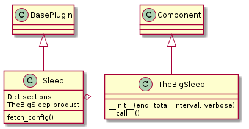

One of the key features that sets this version of the APE apart from prior ones is the use of plugins to extend its operation. Actually creating a plugin is relatively simple, but it can be confusing to look at the existing plugins as they have a lot of extra text meant to help the end-user. This document shows that by following a 5-step procedure you can create a plugin which can then be auto-discovered by the APE for it to use. Although creating the plugin itself is relatively simple, once you start doing more complicated things like connecting a client and server it can get harder to explain so I’ll use the Sleep plugin as an example since it is self-contained.
There are 5 steps needed to create a plugin:
There are probably other steps like planning and testing, but since the plugins themselves don’t do anything other than build and bundle other code, any other steps will be specific to the plugin created. I’ll work through these five steps using the SleepPlugin which is one of the plugins that comes with the ape as a concrete example (it’s in the plugin folder – theape.plugins.sleep_plugin). The SleepPlugin is a plugin for TheBigSleep, a stand alone part that takes a time-string and sleeps when called.

| BasePlugin([configuration, section_header]) | An abstract base-class for plugins |
| TheBigSleep([end, total, interval, verbose]) | A sleeper |
| Sleep(*args, **kwargs) | A plugin for TheBigSleep |
In order to be recognized by the APE your plugin has to inherit from the BasePlugin so you will need to import it along with the parts that are composed within your plugin:
# This package
from theape import BasePlugin
from theape.parts.sleep.sleep import TheBigSleep
In addition, the Help section of the plugin uses the keys of a dictionary when building the help string so I like to use an ordered dictionary so I can control what order the sections appear in:
# python standard library
from collections import OrderedDict
The expected way for a user to get a sample configuration file is to use the fetch sub-command:
theape fetch <plugin name>
Where <plugin name> is the name of some plugin. When this sub-command is issued, the ape will build the plugin and call its fetch_config method, which should return a string with the sample configuration to the APE. As an example, if the user entered theape fetch Sleep, the following should be returned:
[SLEEP]
# 'end' should be a timestamp for the end-time (11-12-2013 8:45 pm)
# 'total' should be a timestamp for the run-time (1 hr 23 minutes)
# 'interval' should be <amount> <units> (1 minute)
# if verbose is False, sceen output will be off except at startup
# only one of absolute or relative time is required, although both can be used
end = <absolute time>
total = <relative time>
interval = 1 second
verbose = True
Since the configuration-file is read-in using python’s ConfigParser, the sample needs to be in the ini format. This string could be created in the plugin itself, but I like to create it outside to make it easier to separate the parts that go into the plugin. Here’s more-or-less what’s in the sleep_plugin module:
SLEEP_SECTION = 'SLEEP'
END_OPTION = 'end'
TOTAL_OPTION = 'total'
INTERVAL_OPTION = 'interval'
VERBOSE_OPTION = 'verbose'
configuration = """
[{0}]
# 'end' should be a timestamp for the end-time (11-12-2013 8:45 pm)
# 'total' should be a timestamp for the run-time (1 hr 23 minutes)
# 'interval' should be <amount> <units> (1 minute)
# if verbose is False, sceen output will be off except at startup
# only one of absolute or relative time is required, although both can be used
{1} = <absolute time>
{2} = <relative time>
{3} = 1 second
{4} = True
""".format(SLEEP_SECTION, END_OPTION,
TOTAL_OPTION,
INTERVAL_OPTION,
VERBOSE_OPTION)
The use of the constants (like END_SECTION) might seem wasteful, but I use them both in the sample and later when I parse the configuration so having them all in one place makes it easier in case I decide to rename things.
To provide an online help system the plugin should create a dictionary of <section-name>:<section contents> pairs. The idea is to provide something like a man-page. As an example, I’ll create an ordered dictionary called sections and add the name section to it:
sections = OrderedDict()
sections['name'] = '{bold}sleep{reset} -- a countdown timer that blocks until time is over'
The key name will appear in bold as will the word sleep in the matching text. In the background the APE will be using string formatting to add the ASCII codes for the formatting (in this case the {bold} and {reset}). The {reset} turns of any prior formatting so there should always be a format-reset pair or the formatting won’t get turned off. Right now the only supported formating keywords are:
- bold
- blue
- red
The rest of the help dictionary was created by adding more sections:
sections['description'] = '{bold}sleep{reset} is a verbose no-op (by default) meant to allow the insertion of a pause in the execution of the APE. At this point all calls to sleep will get the same configuration.'
sections['configuration'] = configuration
sections['see also'] = 'EventTimer, RelativeTime, AbsoluteTime'
sections['options'] = """
The configuration options --
{bold}end{reset} : an absolute time given as a time-stamp that can be interpreted by `dateutil.parser.parse`. This is for the cases where you have a specific time that you want the sleep to end.
{bold}total{reset} : a relative time given as pairs of '<amount> <units>' -- e.g. '3.4 hours'. Most units only use the first letter, but since `months` and `minutes` both start with `m`, you have to use two letters to specify them. The sleep will stop at the start of the sleep + the total time given.
{bold}interval{reset} : The amount of time beween reports of the time remaining (default = 1 second). Use the same formatting as the `total` option.
{bold}verbose{reset} : If True (the default) then report time remaining at specified intervals while the sleep runs.
One of {bold}end{reset} or {bold}total{reset} needs to be specified. Everything else is optional.
"""
sections['author'] = 'ape'
To see how this was output type out the help sub-command for sleep:
theape help Sleep
Since the output goes through a pager (less) I can’t show the output here. Also note that the command is case-sensitive so ape help sleep will fail.
There are four parts to implementing the plugin:
The way the plugin discovery works is that the QuarterMaster looks in the plugins folder (or other modules passed in at run-time) for classes that are sub-classed from the theape.BasePlugin so anything that needs to be auto-discovered has to be a BasePlugin child:
class Sleep(BasePlugin):
"""
A plugin for TheBigSleep
"""
def __init__(self, *args, **kwargs):
"""
Constructor for Sleep
"""
super(Sleep, self).__init__(*args, **kwargs)
return
The use of *args, **kwargs is so that the BasePlugin can have the ConfigurationMap and the expected section-name from the config-file passed to it – so every plugin should expect that it will have these attributes to use when building the product.
When a user types the ape fetch <plugin> the APE calls the plugin’s fetch_config method to get the configuration string and (currently) sends it to stdout. In the case of our example Sleep plugin we already have a configuration variable which holds the string so we can just have the Sleep print it:
def fetch_config(self):
"""
prints a config-file sample
"""
print configuration
This might seem excessive but the original APE saved the configuration to a file rather than sending to stdout which made it likely that a user would accidentally destroy a prior configuration so this method was created to allow the way the fetch sub-command is handled to be changed.
Warning
Plugin configurations need to have the line plugin = <plugin class name> for the APE to be able to find them.
Warning
If the plugin is for an external module the [MODULES] section in the ini file needs to have the module name.
When a user calls the theape help <plugin> sub-command, the APE sends the plugin’s sections property to the less command. So to make it work for our Sleep plugin we can assign it the sections dictionary that we created earlier:
@property
def sections(self):
"""
Help dictionary
"""
if self._sections is None:
self._sections = sections
return self._sections
The product is the object that the APE will call when the program is run (theape run). This means that the product has to be a callable-object that can be fully configured by the plugin (because no parameters will be passed in to the call). In the case of our example we know that we want to return the TheBigSleep object:
@property
def product(self):
"""
A built TheBigSleep object
:return: TheBigSleep
"""
if self._product is None:
end = self.configuration.get_datetime(section=self.section_header,
option=END_OPTION,
optional=True)
total = self.configuration.get_relativetime(section=self.section_header,
option=TOTAL_OPTION,
optional=True)
interval = self.configuration.get_relativetime(section=self.section_header,
option=INTERVAL_OPTION,
optional=True,
default=1)
if interval != 1:
interval = interval.total_seconds()
verbose = self.configuration.get_boolean(section=self.section_header,
option=VERBOSE_OPTION,
optional=True,
default=True)
self._product = TheBigSleep(end=end,
total=total,
interval=interval,
verbose=verbose)
return self._product
As you can see, it uses the self.section_header attribute that it inherits from the BasePlugin in order to know what the name of the section-header in the configuration file should be. In the default configuration the header is SLEEP but in order for a plugin to be used with more than one set of configurations (so that it can have more than one set of behaviors) I needed to allow the specifying of section headers.
The product builder, by and large, just calls the ConfigurationMap (self.configuration) and passes in the parameters to the object it’s building. Hopefully the calls being made are obvious enough but if not the API might help explain what’s being passed into the TheBigSleep constructor.
| ConfigurationMap(filename) | A map from configuration files to data |
| ConfigurationMap.get_datetime(section, option) | Gets a datetime object based on the option (value is timestamp) (see timemap.AbsoluteTime) |
| ConfigurationMap.get_boolean(section, option) | Gets a value and casts it to a boolean |
| ConfigurationMap.get_relativetime(section, ...) | Gets a relativetime object based on the option (assumes value is timestamp) (see timemap.RelativeTime) |
At this point we’ve implemented the plugin, all that’s required for it to be usable is that it be placed somewhere the APE can find it.
In order for the APE to find a plugin two conditions need to be met:
- The plugin has to sub-class the BasePlugin
- The module with the plugin has to be known to the APE as a plugin source
In the case of the Sleep plugin it is part of the APE so it sits in the theape.plugins folder (the default place the APE looks for plugins). For non-ape plugins the package they belong to has to be installed (e.g. with setup.py) and the module name passed in to the APE on the command line.
Let’s suppose that instead of the default Sleep plugin you made a better one called BetterSleep that’s in the bettersleep package. Once the bettersleep package is installed then the user can access it using the --modules flag.
To see what plugins the APE recognizes in the module:
theape list bettersleep
To fetch the configuration snippet:
theape fetch --module bettersleep BetterSleep
(this is somewhat confusing, but the list sub-command only takes one argument so you don’t need the --module flag, but the fetch sub-command takes either zero, one, or two arguments so I had to add the --module flag to make it specific that an external module was being called).
To run:
theape run
This requires that the user know what modules contain plugins so it isn’t an automatic system, but I’m assuming that these cases will be rare enough that this will work. For non-APE maintainers it would make sense just to put the plugin in the APE’s plugin folder, the external module solution is so that I can build and use plugins for code that won’t be added to the APE itself.